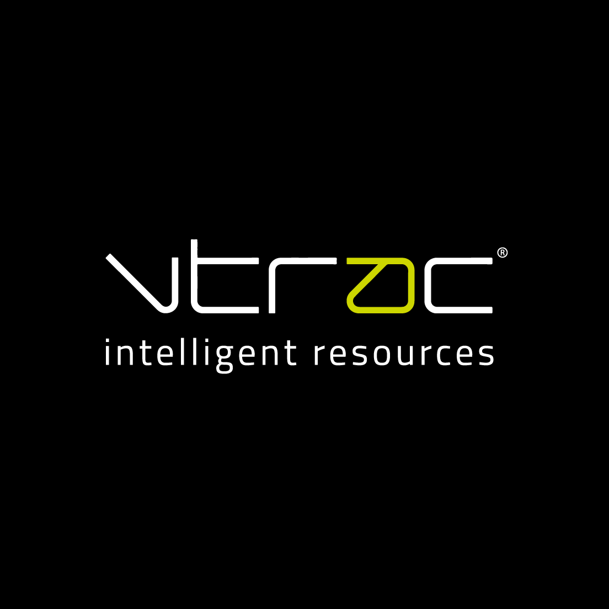

Map likely needs
Map likely Energy project needs against Microsoft D365, Azure, data streaming, and integration roles already visible in VTRAC's market.

For Cesar Vargas and VTRAC
Saw VTRAC is hiring for B2B Technology in the Energy sector. That is a strong sign the sales motion is moving faster than delivery hiring can safely follow.
VTRAC is pushing deeper into Energy while still serving Technology, Engineering, and Leadership work. That move needs more than recruiters; it needs delivery capacity that can start when a client asks for proof. The hard part is matching Microsoft, data, cloud, and field systems skills before a deal turns urgent. If the bench is thin, new sales meetings can turn into slow starts or smaller bids.
We would run a dedicated squad under VTRAC's PM or client owner, so VTRAC keeps the client relationship.
Map likely Energy project needs against Microsoft D365, Azure, data streaming, and integration roles already visible in VTRAC's market.
Stand up a small delivery pod that can support bids, discovery calls, estimates, and early technical proof work.
Build reusable starter assets for energy data, reporting, CRM, and secure portal work so new projects start faster.
Add QA and DevOps coverage for weekly demos, release checks, and handoff notes for VTRAC's internal team.
Elinext is a full-cycle software development company founded in 1997. We have about 700 in-house specialists and use no freelancers or subcontractors. We are ISO 9001 and ISO 27001 certified, which matters when energy clients ask about quality and data security. Teams behind Siemens, Broadcom, Volkswagen, TRUMPF, and TUI work with us because we can add steady engineering capacity across web, data, mobile, AI/ML, and DevOps. For VTRAC, that means a practical delivery partner behind your resourcing and consulting offers.

Elinext built a web solution for a green energy investment company. It joined technical, financial, legal, and project documents in one place.
Useful proof for VTRAC's energy push: Microsoft stack, Azure, Java, Angular, and delivery under live client needs.
Read case study
Elinext built an industrial data platform that reads machine data and gives teams action insight.
Useful proof for Energy clients that need asset data, alerts, reporting, and cost control.
Read case study